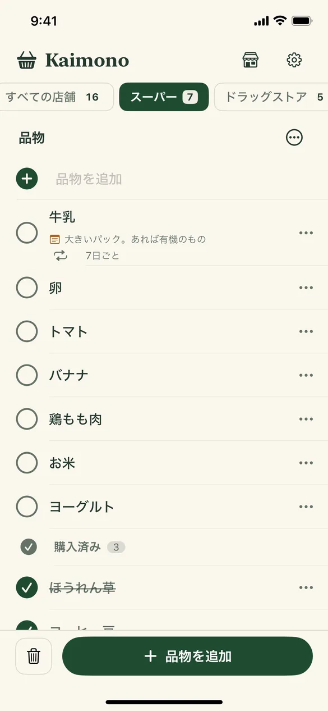
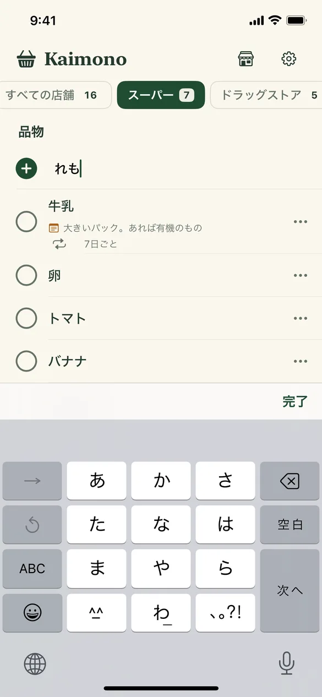
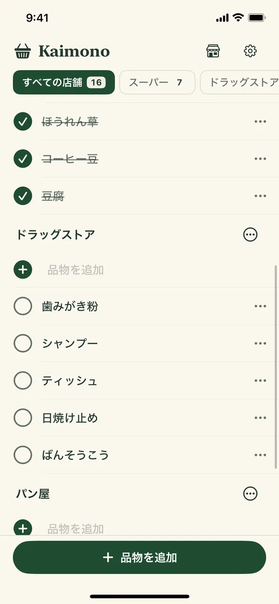
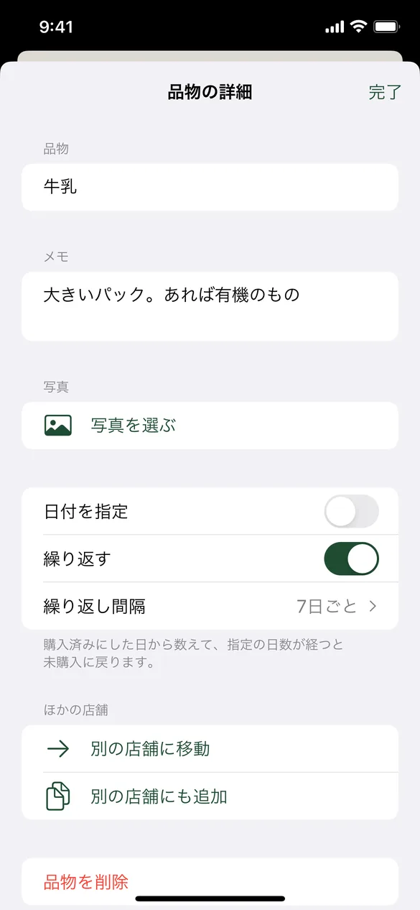
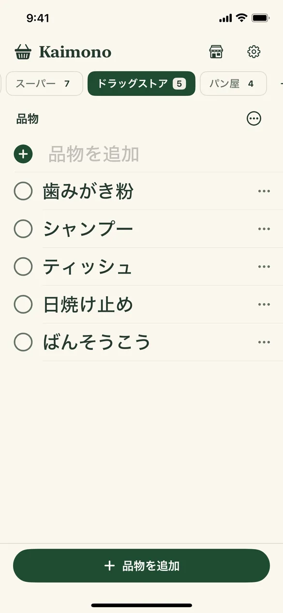

お店ごとに書ける
買い物リスト
品名を書いて改行すると、すぐ次の行が出てきます。スーパー、ドラッグストア、パン屋とお店ごとにリストを分けておき、買ったら丸をタップしてチェックするだけです。
iPhone用・無料。アカウント登録は不要で、リストはiPhoneの中に保存されます。

できること




そのほか
- 右スワイプで購入済み、左スワイプで削除。消しても元に戻せます
- 品物ごとにメモ、写真、日付をつけられます
- メモアプリなどからリストを貼り付けて、まとめて追加
- リストをテキストで送る、ホーム画面のウィジェット、「ファイル」へのバックアップ
- 日本語と英語を含む24言語に対応